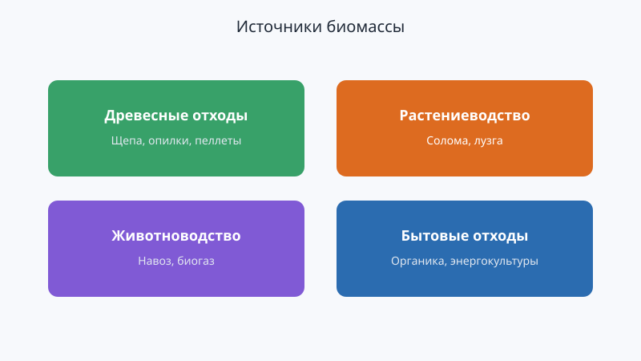
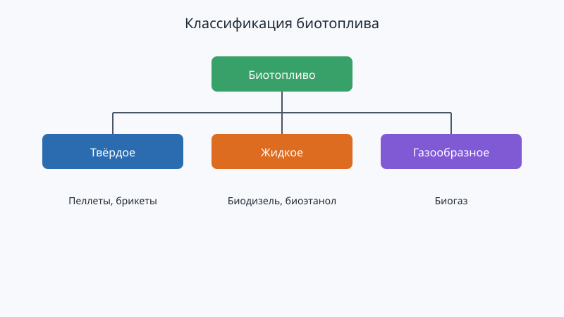
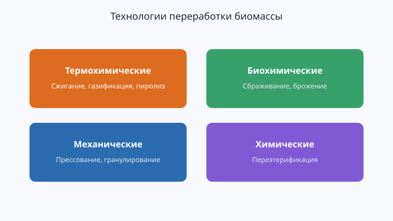

Глава 7. Энергия биомассы
7.1 Биомасса как источник энергии
Биомасса — это органическое вещество растительного и животного происхождения, используемое для получения энергии: древесина, отходы сельского хозяйства, биогаз. Биомасса относится к возобновляемым источникам энергии (ВИЭ), поскольку её запасы постоянно восполняются в процессе роста растений.
При сжигании биомассы выделяется столько же углекислого газа, сколько было поглощено растением при его росте, поэтому углеродный баланс биомассы считается близким к нейтральному. Это важное преимущество биомассы перед ископаемым топливом.
Основные источники биомассы: древесные отходы, отходы растениеводства (солома, лузга), отходы животноводства, органические бытовые отходы и специально выращиваемые энергетические культуры.

Энергия биомассы может использоваться для производства тепла, электроэнергии и моторных топлив, что делает её универсальным возобновляемым ресурсом.
7.2 Виды биотоплива
Биотопливо — это топливо, получаемое из биомассы: биодизель, биоэтанол, биогаз, топливные пеллеты и др. Биотопливо делится на твёрдое, жидкое и газообразное.
Топливные пеллеты — прессованные гранулы из растительного сырья (древесины, соломы), используемые как твёрдое топливо. Они удобны для автоматизации процессов горения и транспортировки.
Биогаз — газообразное топливо, образующееся при анаэробном разложении органических отходов; в основном состоит из метана и углекислого газа. Биогаз используется для выработки тепла и электроэнергии, а также как моторное топливо.

Жидкое биотопливо (биодизель, биоэтанол) применяется в основном на транспорте. Производство биотоплива из сельскохозяйственных культур требует баланса между энергетическими и продовольственными целями.
7.3 Технологии переработки биомассы
Переработка биомассы в энергоносители осуществляется по нескольким основным технологическим направлениям.
- Термохимические — прямое сжигание, газификация, пиролиз. Позволяют получать тепло, электроэнергию и синтез-газ.
- Биохимические — анаэробное сбраживание (получение биогаза), спиртовое брожение (получение биоэтанола).
- Механические — прессование, гранулирование, измельчение для получения пеллет и брикетов.
- Химические — получение биодизеля путём переэтерификации масел и жиров.
Наибольший эффект достигается при комплексной переработке биомассы — например, при сочетании получения биогаза из отходов животноводства с использованием остатков как удобрения.

Проверка знаний
-
Что такое биомасса?
Органическое вещество растительного и животного происхождения, используемое для получения энергии: древесина, отходы сельского хозяйства, биогаз.
-
Почему углеродный баланс биомассы считается близким к нейтральному?
При сжигании биомассы выделяется столько же углекислого газа, сколько было поглощено растением при его росте.
-
Что такое биотопливо?
Топливо, получаемое из биомассы: биодизель, биоэтанол, биогаз, топливные пеллеты и др.
-
Что такое биогаз и из чего он состоит?
Газообразное топливо, образующееся при анаэробном разложении органических отходов; в основном состоит из метана и углекислого газа.
-
Назовите основные технологии переработки биомассы.
Термохимические, биохимические, механические и химические.
-
Что такое топливные пеллеты?
Прессованные гранулы из растительного сырья (древесины, соломы), используемые как твёрдое топливо.